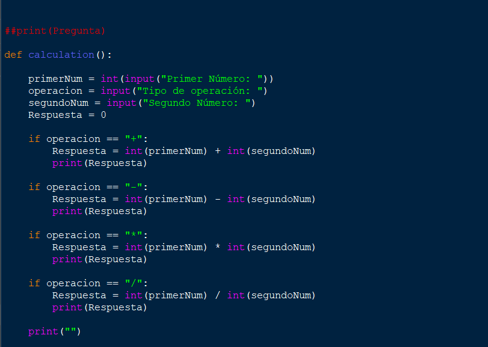
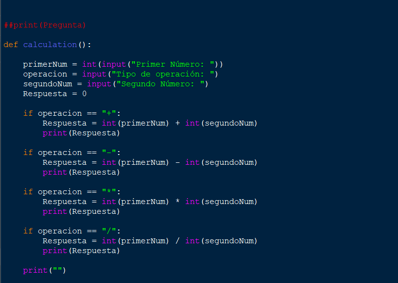

Programando en Python
Python es considerado por muchos el idioma de programación
ideal para empezar; tiene sintaxis cortas, es fácil
de explicar, hay una gran comunidad y muchos
dicen que se parece al Inglés; Es por esto
y mucho más por lo que lo escogí como uno de mis
primeros idiomas de programación.
Habiendo solo trabajado con Unity, me puse a hacer lo
único que sabía hacer; mirar tutoriales. En poco tiempo
tenía algún que otro proyecto pequeño, como
una calculadora, o un "Piedra, Papel, Tijeras", nada
impresionante, aunque por el momento estaba muy bien.
Seguí y seguí haciendo proyectos pequeños,
ahora ya sí con menos regularidad, hasta que
llegué a un punto ene el que me di cuenta
de que quería hacer algo más grande, y, tras
unos dias de pensarlo, pensé en aprender DJango
(Una extensión de Python para hacer backend de webs).
Tras intentar y aprender, me topé con que
quería hacer mi propia web, y esto simplemente
nos lleva a el blog anterior a este, donde
cuento por donde he tenido que pasar para
llegar a la web en la que te encuentras ahora mismo.
Algunos igual pensáis que entonces no he
aprendido demasiado Python, pero, aunque creo
que no tengo un nivel muy avanzado, me considero
bastante capacitado para hacer cualquier proyecto
en este idioma, ya que es muy flexible y se basa
mucho en las bases, sin mencionar que Python
también me ha enseñado a programar mejor
que cualquier otro lenguaje debido a su
organización y facilidad de entendimiento.
-Néstor Blanco 23-09-2022
 
